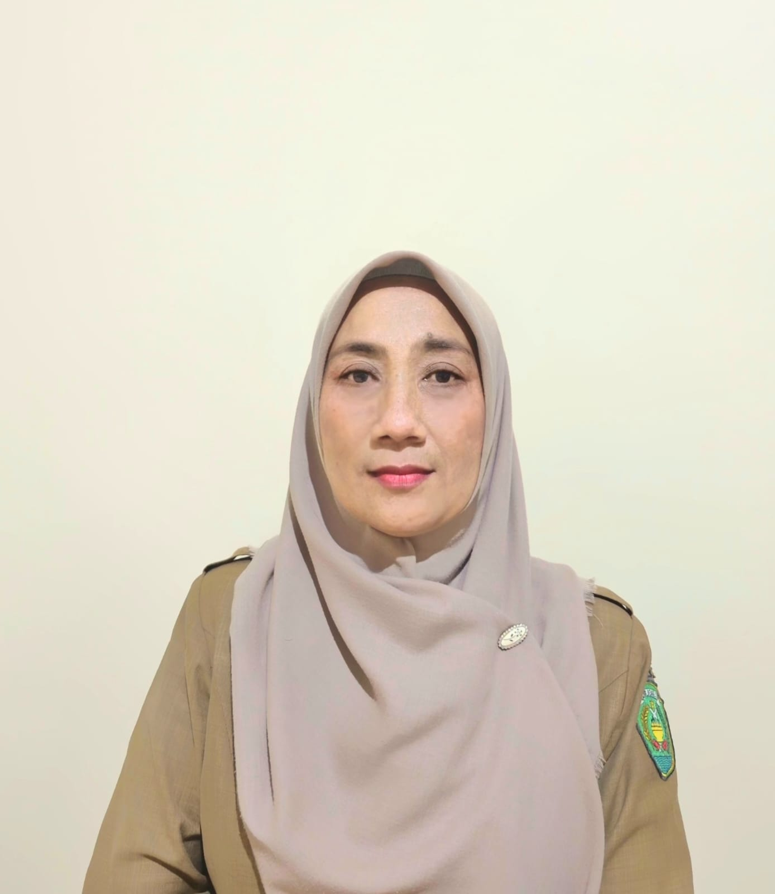
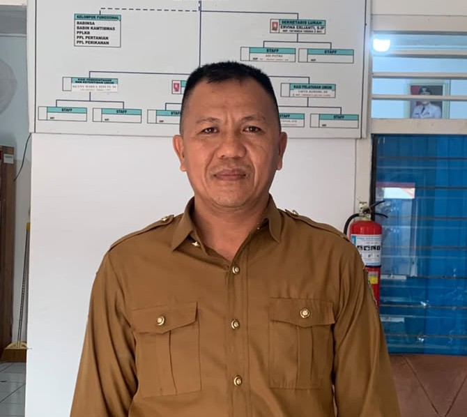

Susunan Pemerintahan Kelurahan Pasar Melintang
NIP. 19760906 199602 1 002

NIP. 19740824 199503 2 002
NIP. 19731101 199303 2 003
NIP. 19840613 201101 2 005
NIP. 19810812 200604 2 007
NIP. 19770507 202521 2 013

NIP. 19830307 200604 1 008